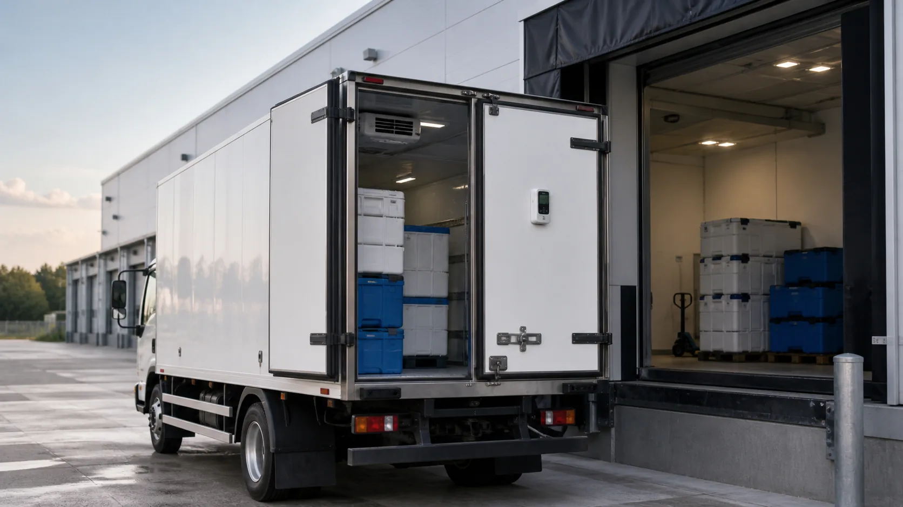
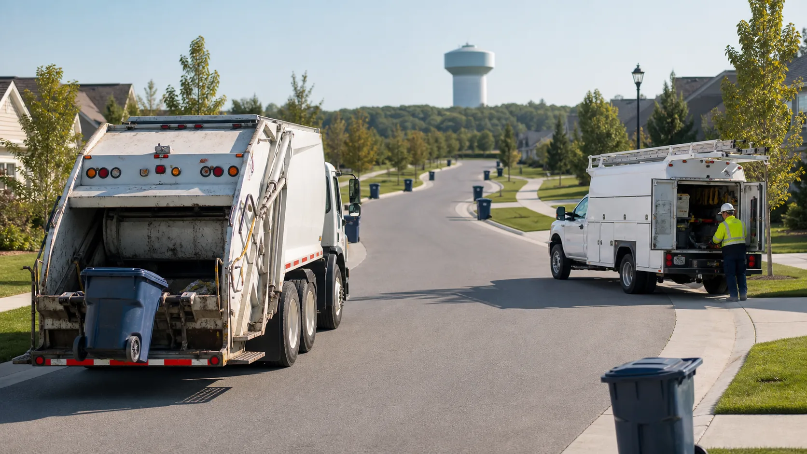
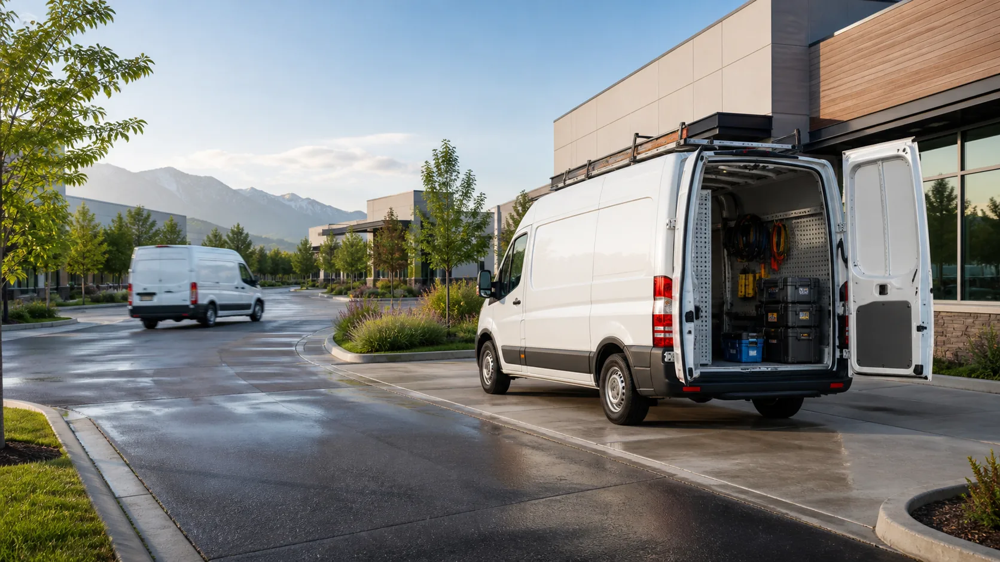

Logistics & Transport
Track deliveries, routes, ETAs, and vehicle availability across the entire transport operation.
Fleet Tracking
Autonautics fleet tracking puts your entire fleet on one live map—real-time location, speed, ignition, and trip status for every vehicle. Follow journeys as they happen, replay any trip, and get alerted the moment something needs attention.
Overview
Fleet tracking is the use of GPS devices and software to monitor where your vehicles are and what they’re doing, in real time. A tracking device in each vehicle sends its location, speed, and status to a central platform, so you can see your whole fleet on one map instead of calling drivers for updates.
With Autonautics, fleet tracking goes past a dot on a map: you get live telemetry (fuel, temperature, ignition), automatic alerts, full trip history, and reports—everything you need to run vehicles safely, cut costs, and answer “where is it?” in a second.
How It Works
Every tracked vehicle carries a GPS telematics device that reports its position to the Autonautics platform. Three steps:
A GPS tracker sends location, speed, and sensor data every 3–5 seconds over the mobile network.
Autonautics maps each vehicle live, applies your alert rules, and stores the trip.
Staff see the fleet on one screen, get alerts, and pull reports—from a browser or the mobile app.
Autonautics works with GPS and telematics hardware from Teltonika, Queclink, and Jimi, plus 20+ supported device models, and complies with AIS-140 and other regional standards—so you can keep the hardware you already run.
Live Tracking
Follow every vehicle in real time with live location, movement, speed, direction, and operational status—all from a single interactive map.
Every vehicle’s position, speed, ignition, and heading, refreshed every 3–5 seconds on one interactive map.
Watch your entire fleet at once—filter by group, region, or status to spot idle, moving, or stopped vehicles instantly.
See who’s driving, which trip is in progress, and how far along it is, as each journey unfolds.
Sensors & Telemetry
Turn each vehicle into a live data source with connected sensors and accessories. Beyond GPS, Autonautics reads:
Detect theft, waste, and refuel events.
Keep cold-chain loads in range.
Know engine and power status live.
Tie every trip to a named driver.
Get instant emergency alerts.
Track loading, tipping, and access events.
Add the hardware you need now and expand later—the platform handles new device types without a rebuild.
Video Telematics
Pair tracking with AI dash cameras to get video alongside the map. When a harsh-brake or collision event fires, you get the footage and the location together—so you can verify incidents, clear false claims, and coach drivers with real evidence instead of guesswork.


View road and vehicle footage as it happens.
Surface safety events that need attention.
Replay video, events, and location in sync.
Alerts
Set rules once and let the platform watch the fleet for you. Alerts route to the right people by email, SMS, or push—so critical events never sit unseen and your team responds in minutes, not hours.
Speed & Geofence
Speeding over your set limit, and geofence entry and exit.
Idle & Movement
Excessive idling, and unauthorised ignition or movement (towing).
Emergency & Device
Power or GPS disconnect, and SOS / panic button activation.
Trip History
Every journey is recorded and replayable for up to 90 days. Scrub through a trip on the map with synchronised events and video, or read it as a timeline of stops, idles, and milestones.

Trip Replay
Re-watch route, events, and video in sync.
Journey Timeline
Every stop, idle, and event in order.
Trip Summary
Distance, drive time, idle time, top and average speed, and stop count for every trip.
Who Uses It
Any team responsible for vehicles, mobile assets, routes, or field work can use Autonautics to know what is moving, where it is, and what needs attention.
Track deliveries, routes, ETAs, and vehicle availability across the entire transport operation.
Locate heavy vehicles and mobile assets across worksites, yards, and remote operating areas.

Protect temperature-sensitive loads with live location, sensor data, and immediate exception alerts.

Manage repeat routes, service coverage, stops, and daily vehicle utilisation with less manual checking.

Dispatch the nearest technician, monitor progress, and give customers more reliable arrival times.
Available in Autonautics Products
Fleet tracking is built into Connected Fleet, and works alongside Last Mile, Security Monitor, and the IoT Platform—so tracking data flows into dispatch, delivery, and security in one system.
Monitor vehicles in real time and manage your entire fleet from one connected platform.
Give drivers routes and customers live ETAs on every delivery.
Protect vehicles and drivers with live security and recovery.
Connect and monitor sensors, trackers, and industrial equipment.
FAQ
Get Started
Book a 30-minute demo and we’ll show live tracking, alerts, and trip replay using your vehicles and your routes.